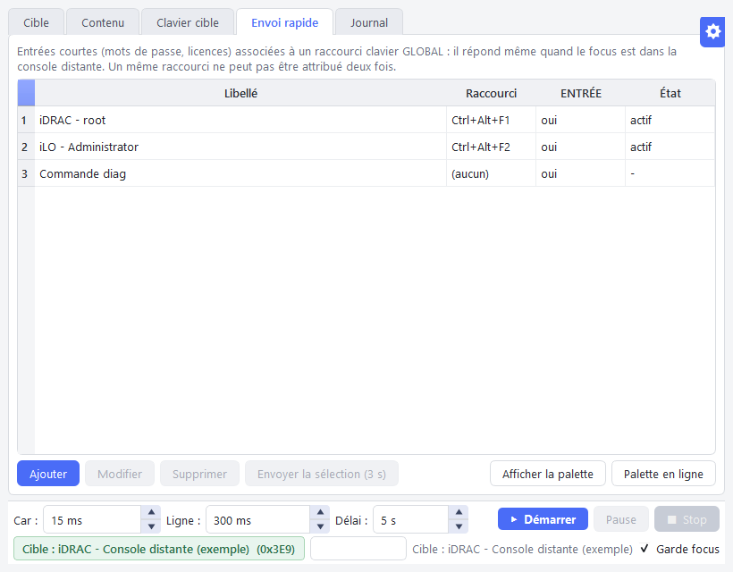
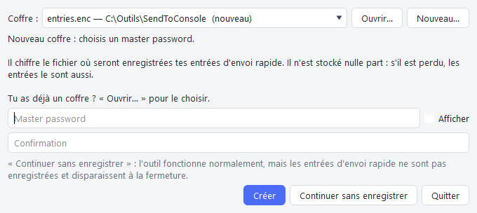
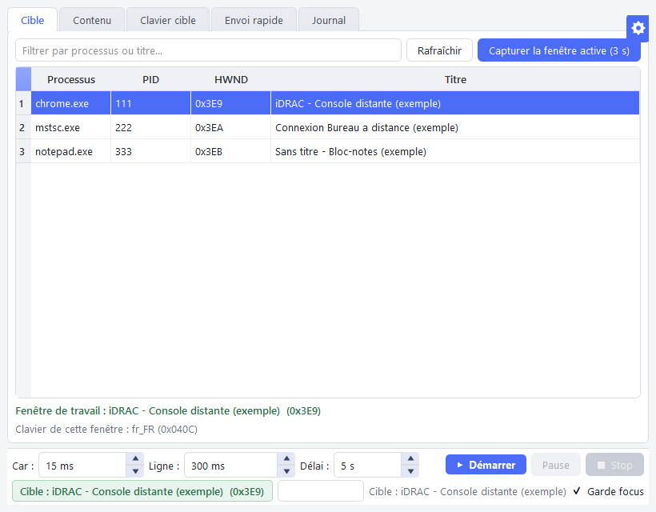
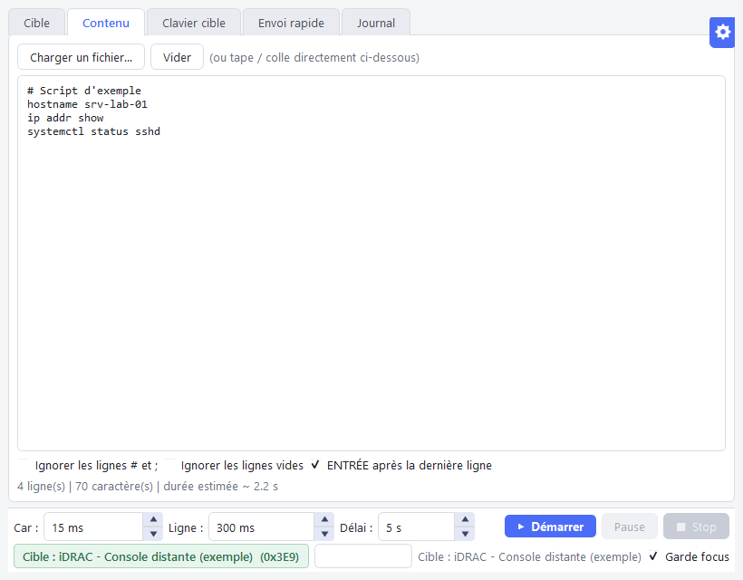
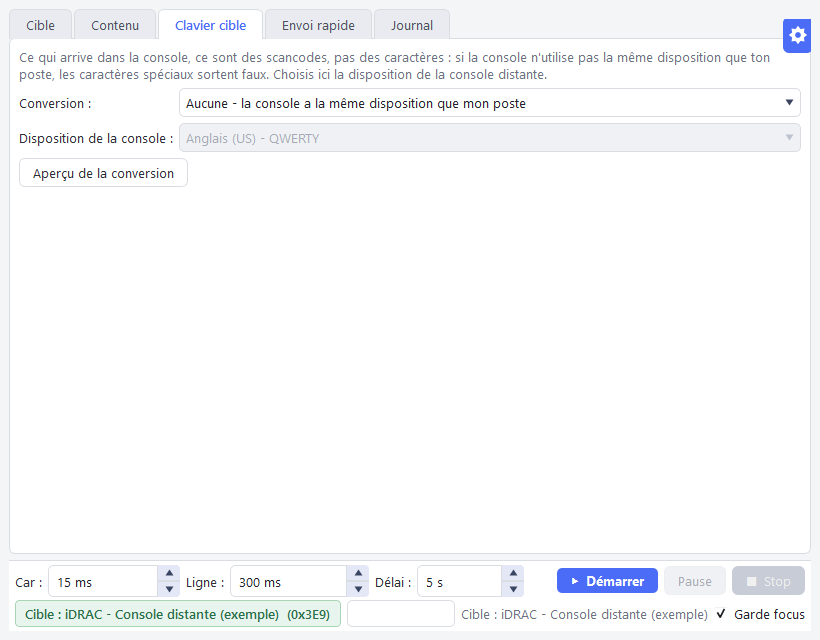
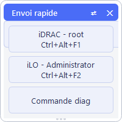
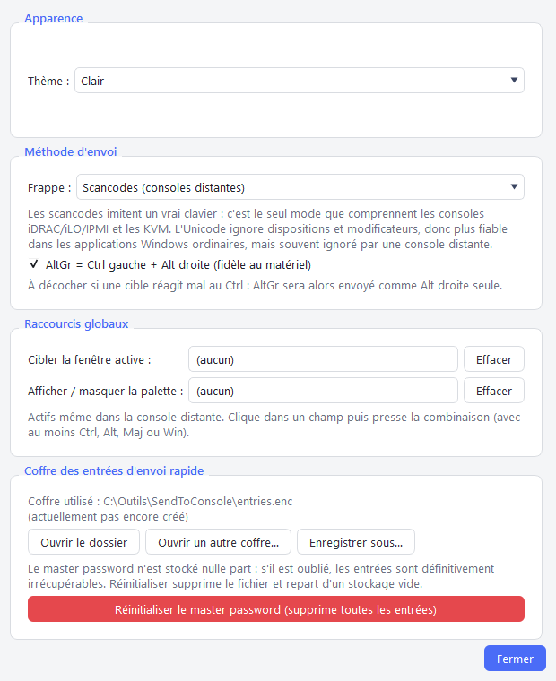

Windows 10 / 11 · Gratuit et open source (MIT) · 100 % local, aucune connexion réseau

Le problème
Les consoles d'administration à distance (KVM IP, consoles HTML5 des cartes BMC,
sessions RDP restreintes) refusent souvent le presse-papiers. Il faut alors retaper à la
main des mots de passe de 30 caractères, des clés de licence ou des scripts
entiers, avec en prime les pièges des dispositions clavier : un @
tapé sur un poste AZERTY arrive comme un 2 sur une console QWERTY.
La solution
SendToConsole simule la frappe clavier vers la fenêtre de votre
choix, caractère par caractère, au niveau des scancodes : la console reçoit
exactement ce qu'aurait envoyé un clavier physique. Il gère les caractères AltGr, la
disposition de la console cible, et met tout en pause si la fenêtre perd le focus.
Fonctionnalités
Tout ce qu'il faut pour saisir vite et juste dans une console distante, même là où le presse-papiers est bloqué.
Frappe par scancodes
Ce que comprennent les consoles iDRAC, iLO, IPMI et les KVM. Repli Unicode pour les applications Windows ordinaires.
Envoi rapide par raccourci global
Mots de passe, licences, commandes : chaque entrée a son raccourci, actif même quand le focus est dans la console.
Coller par frappe
Copiez normalement (Ctrl+C), pressez votre raccourci dans la console : le texte copié y est tapé, même là où le collage est bloqué.
Palette flottante
Un clic sur une entrée l'envoie. La palette ne prend jamais le focus : le curseur reste dans le champ de la console.
Dispositions clavier
Caractères AltGr (@ # € | \ ~ { } [ ]), conversion vers la disposition de la console, détection de celle de la fenêtre visée.
Garde-fou de focus
Si la fenêtre cible perd le focus en cours d'envoi, tout se met en pause : rien n'est tapé ailleurs.
Coffre chiffré
Entrées chiffrées (Fernet, PBKDF2-SHA256 à 600 000 itérations) derrière un master password. Plusieurs coffres possibles.
Guide d'utilisation
De l'installation au premier envoi en quelques minutes.
1Installer
Téléchargez SendToConsole-<version>-win64.zip depuis la
dernière release,
décompressez-le dans un dossier réservé à votre compte (par exemple
%LOCALAPPDATA%\Programs\SendToConsole) et lancez SendToConsole.exe.
Aucune installation ni droit administrateur n'est nécessaire.
Avertissement SmartScreenL'exécutable n'est pas signé
numériquement : au premier lancement, Windows peut afficher « Windows a protégé votre
ordinateur ». Cliquez sur « Informations complémentaires » puis « Exécuter quand même »,
après avoir vérifié l'archive.
2Choisir un coffre et son master password
Au lancement, SendToConsole propose le dernier coffre utilisé et la
liste des coffres récents. Vous pouvez aussi :
Ouvrir… un coffre existant (fichier .enc), y compris dès le premier lancement ;
Nouveau… pour créer un coffre vide : un fichier existant n'est jamais écrasé ;
Continuer sans enregistrer : les entrées vivent en mémoire et disparaissent à la fermeture.
Le master password n'est stocké nulle part.S'il est perdu,
les entrées du coffre sont irrécupérables. Choisissez une phrase longue et notez-la dans
votre gestionnaire de mots de passe.

Choix du coffre et du master password au lancement.
3Choisir la fenêtre cible
L'onglet Cible liste les fenêtres ouvertes (filtrables par processus
ou titre). Sélectionnez la console, ou cliquez sur Capturer la fenêtre active
(3 s) puis cliquez dans la console avant la fin du décompte. La disposition
clavier de la fenêtre est affichée, et un avertissement apparaît si elle tourne en
administrateur.

Onglet Cible (fenêtres d'exemple).
4Envoyer du texte
Dans l'onglet Contenu, collez votre texte ou chargez un fichier. Options :
ignorer les lignes de commentaire (#, ;) et les lignes vides,
ajouter Entrée après la dernière ligne.
Réglez en bas le délai entre caractères, entre lignes et le compte à rebours, puis
Démarrer : SendToConsole ramène la console au premier plan et tape.
Pause et Stop restent disponibles à tout moment ; avec
Garde focus, l'envoi se met en pause dès que la console perd le focus.

Onglet Contenu et barre d'envoi.
5Adapter le clavier à la console
Une console distante reçoit des scancodes (positions de touches), pas des
caractères. Si elle n'utilise pas la même disposition que votre poste (serveur en
QWERTY US, poste en AZERTY), choisissez sa disposition dans l'onglet
Clavier cible : SendToConsole convertit le texte pour que les
caractères arrivent justes. Aperçu de la conversion montre le résultat
avant l'envoi.

Onglet Clavier cible.
6Coller par frappe
Le plus rapide pour un texte ponctuel : réglez une fois le raccourci
Coller le presse-papiers (frappe) dans les options (par exemple
Ctrl+Alt+V). Ensuite :
copiez le texte où vous voulez avec votre Ctrl+C habituel ;
cliquez dans le champ de la console ;
pressez votre raccourci : le texte est tapé au clavier, avec la conversion de disposition et le garde-fou de focus.
Garde-fous : un texte de plusieurs lignes (chaque ligne validée par
Entrée) demande un second appui dans les 5 secondes ; un saut de ligne
final n'exécute pas la dernière ligne ; les caractères de contrôle ou invisibles sont
refusés ; rien n'est tapé si l'outil lui-même a le focus. Vos Ctrl+C
et Ctrl+V restent ceux de Windows : ils ne peuvent pas être
choisis comme raccourcis de l'outil.
Mots de passe récurrentsCe que vous copiez reste dans
l'historique du presse-papiers de Windows (Win+V). Pour un mot de passe
utilisé souvent, préférez une entrée d'envoi rapide, stockée dans le coffre chiffré.
7Envoi rapide et raccourcis globaux
L'onglet Envoi rapide regroupe des entrées courtes : mots de passe,
clés de licence, commandes fréquentes. Chaque entrée peut :
être masquée (mot de passe : jamais affichée ni journalisée) ;
recevoir un raccourci global (par exemple Ctrl+Alt+F1), actif même quand le focus est dans la console ;
envoyer Entrée après le texte.
Cliquez dans le champ de la console, pressez le raccourci : le texte est tapé à
l'endroit du curseur. Si c'est SendToConsole qui a le focus, rien n'est envoyé :
un raccourci ne tape jamais dans une autre fenêtre que celle au premier plan. Un même raccourci ne peut être attribué qu'une fois, et les
combinaisons qui produiraient un caractère (AltGr) sont refusées.
8Palette flottante
La palette affiche vos entrées en boutons, toujours au premier plan. Un clic envoie
l'entrée vers la dernière fenêtre utilisée sans lui voler le focus :
le curseur reste dans le champ de la console. Elle s'affiche en ligne ou en colonne,
et peut être montrée ou masquée par un raccourci global (Options).

9Options
Le bouton ⚙ ouvre les options :
Thème clair ou sombre ;
Méthode d'envoi : scancodes (consoles distantes) ou Unicode (applications Windows), et envoi d'AltGr avec ou sans Ctrl gauche ;
Raccourcis globaux d'action : coller le presse-papiers par frappe, cibler la fenêtre active, afficher / masquer la palette ;
Coffre : ouvrir le dossier, ouvrir un autre coffre, enregistrer sous un nouveau fichier (jamais d'écrasement), réinitialiser le master password.

Sécurité
SendToConsole manipule des mots de passe d'administration : la sécurité du stockage est une exigence, vérifiée par les tests.
Garanties
Aucun secret en clair sur disque, dans les journaux, le registre ou un message d'erreur.
Le presse-papiers n'est jamais écrit : il est seulement lu quand vous pressez le raccourci « Coller ».
Coffre chiffré et authentifié (Fernet) : un fichier altéré est rejeté.
Clé dérivée du master password (PBKDF2-SHA256, 600 000 itérations, sel aléatoire), jamais stockée.
Écriture atomique ; un coffre existant n'est jamais écrasé.
Fichier restreint à votre compte (droits NTFS).
Aucune connexion réseau, aucune télémétrie.
Releases construites par la CI, avec empreintes SHA-256 et attestation de provenance.
Limites
Un logiciel malveillant qui tourne sous votre compte peut lire la mémoire de l'application ou capter les frappes.
Les secrets déchiffrés restent en mémoire tant que l'application tourne.
Sur clé USB (FAT32/exFAT) ou partage réseau, seul le master password protège le coffre.
Un même coffre ouvert depuis deux postes : le dernier qui enregistre l'emporte.
Rien n'est tapé dans la console, ou un avertissement « administrateur » s'affiche
Windows interdit la frappe simulée vers un programme lancé en administrateur si
SendToConsole ne l'est pas. Lancez le navigateur ou le client de console normalement,
ou lancez SendToConsole en administrateur aussi.
Les caractères spéciaux arrivent faux (@, #, \…)
La console n'utilise pas la même disposition clavier que votre poste. Choisissez sa
disposition dans l'onglet Clavier cible et vérifiez avec « Aperçu de la conversion ».
Si une cible réagit mal à AltGr, décochez « AltGr = Ctrl gauche + Alt droite » dans
les options.
Il manque des caractères quand le texte est long
Certaines consoles web n'absorbent pas une frappe rapide. Augmentez le délai entre
caractères (par exemple 30 à 50 ms) et entre lignes.
La méthode Unicode fonctionne dans le Bloc-notes, pas dans la console
C'est attendu : les consoles distantes (iDRAC, iLO, KVM) ne comprennent que les
scancodes. Gardez la méthode « Scancodes » pour elles.
J'ai oublié mon master password
Il n'est stocké nulle part : les entrées du coffre sont irrécupérables. Options →
« Réinitialiser le master password » supprime le coffre et repart d'un coffre vide.
Où sont enregistrées mes entrées ?
Dans le fichier coffre choisi au lancement (par défaut entries.enc à côté de
l'exécutable). Options → « Ouvrir le dossier » y mène directement. Les réglages
(thème, délais, chemins des coffres récents) sont dans le registre, sans aucun secret.
Comment utiliser un coffre par client ou sur clé USB ?
Créez un coffre par fichier (« Nouveau… ») et passez de l'un à l'autre au lancement
ou via Options → « Ouvrir un autre coffre… ». Sur clé USB, le fichier n'a pas de
droits NTFS : la solidité du master password est alors votre seule protection.
Compiler depuis les sources
Prérequis : Windows et Python 3.12.
git clone https://github.com/Kenny3231/SendToConsole.git
cd SendToConsole
py -3.12 -m pip install -r requirements-dev.txt
py -3.12 -m pytest # tests : clavier simulé, aucune vraie frappe
py -3.12 src\main.py # lancer depuis les sources
.\build\build.ps1 # construire l'exécutable dans dist\SendToConsole\